Trabalho: Relatóio com base no menu trabalho. Planos: Relatório com base no menu planejamento.
Selecione a orientação do layout:
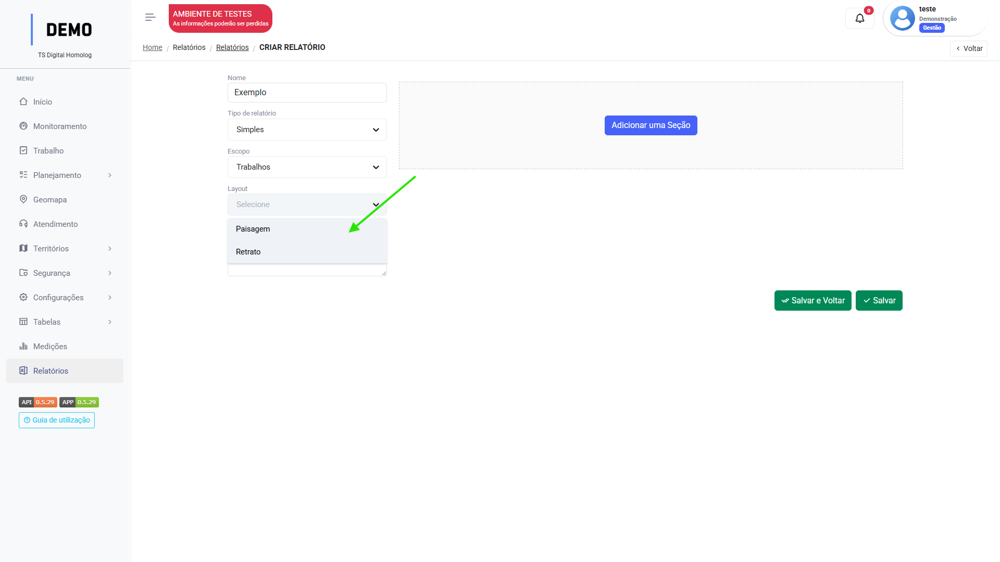
Simples (Escopo trabalho)
Clique em "Adicionar uma seção".
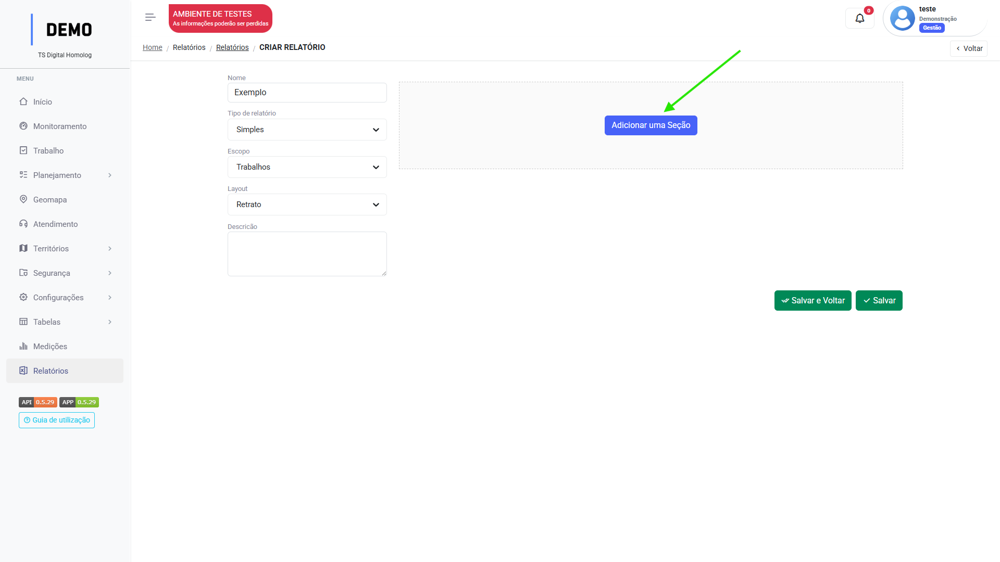
Clique na sessão para adicionar uma linha:
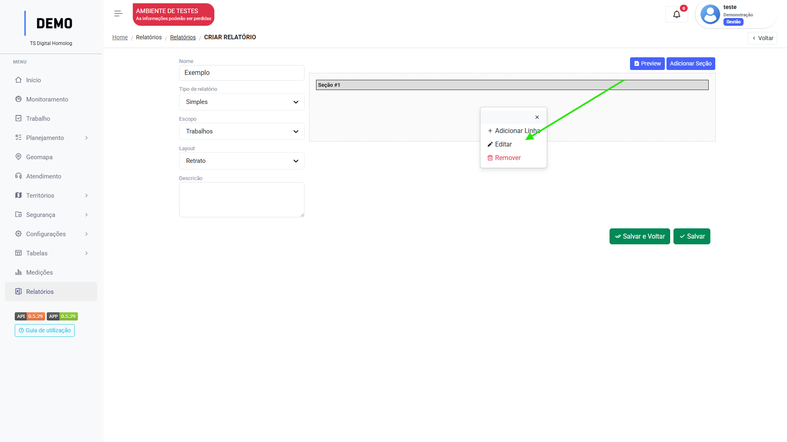
Você pode clicar em "Editar" para mudar o nome de Seção#1
Clique em "Adicionar Coluna":
Insira a largura e altura da coluna:
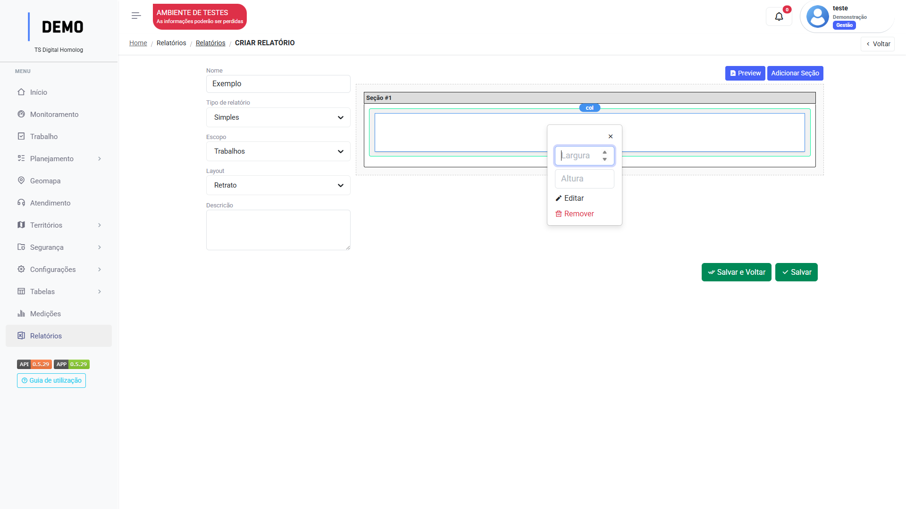
Largura máx: 12
Clique em "Editar" para configurar quais dados que vão compor aquela coluna.
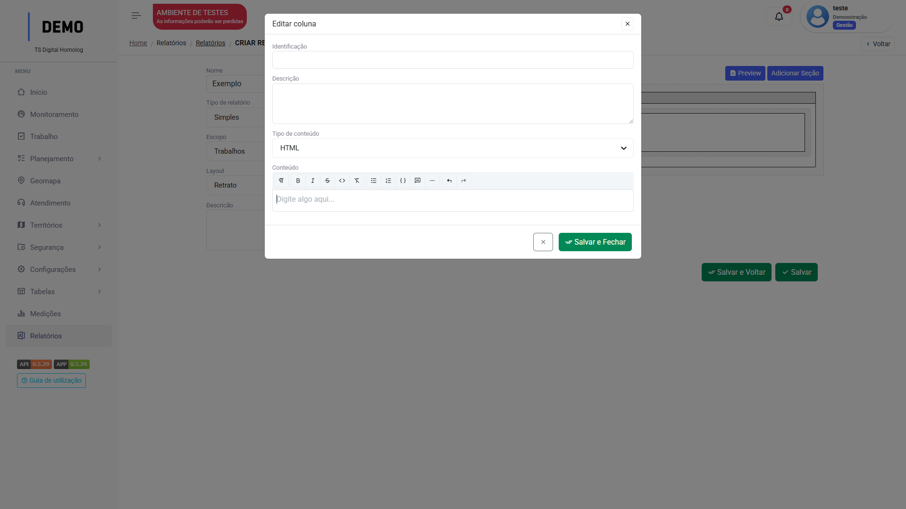
Identifique a coluna e seu tipo de conteúdo:
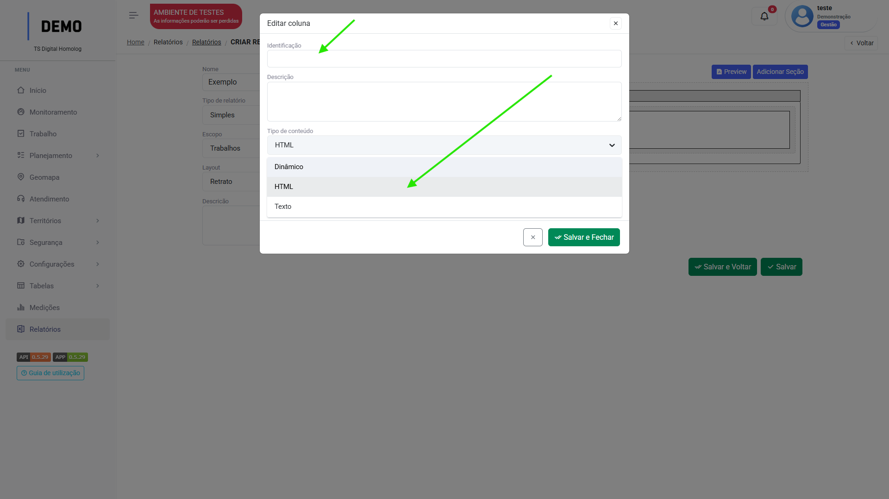
Clique em "Salvar".
Atenção
No menu Tipo de trabalho, adicione o relatório na seção Relatórios disponíveis para que seja possível sua extração.
Tipos de conteúdo
Ao configurar os dados que serão exibidos em uma coluna do relatório, deve-se selecionar o tipo de conteúdo daquela coluna, sendo:
Texto
HTML
Dinâmico
Texto
O tipo de conteúdo "Texto" irá abrir um campo de preenchimento para que o usuário insira as informações que irão compor aquela coluna no formato de texto:
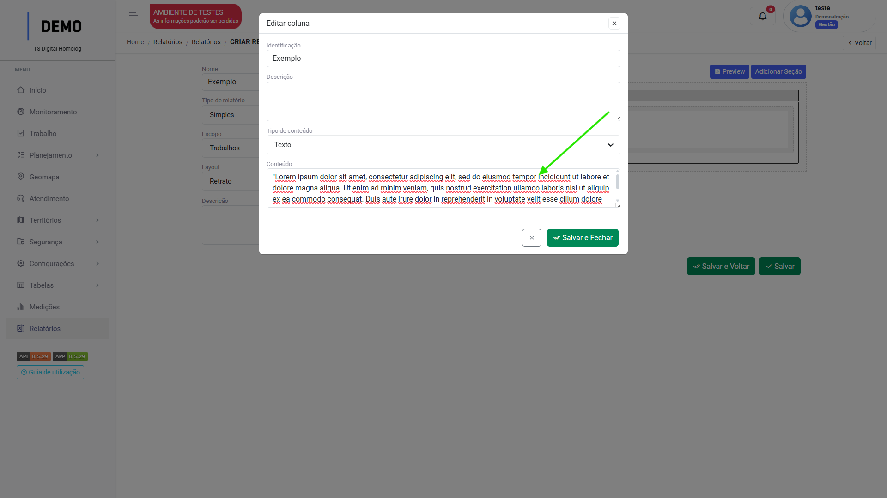
Saída no relatório:
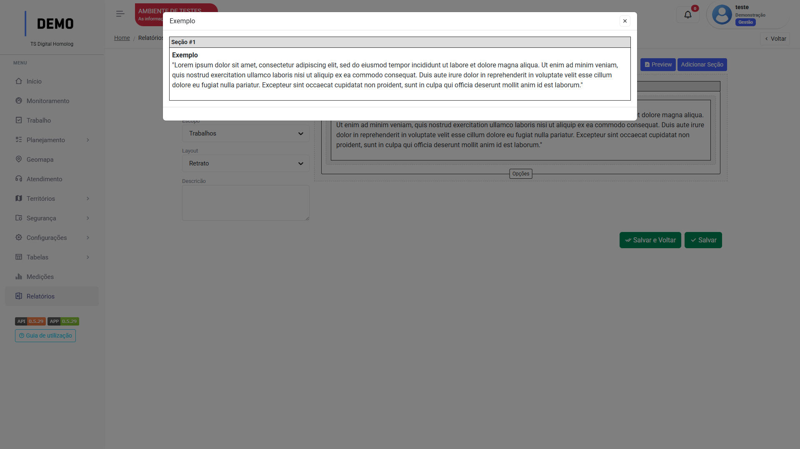
Clique em "Preview" para visualizar a saída
HTML
O tipo de conteúdo "HTML" irá abrir um campo de preenchimento para que o usuário insira as informações que irão compor aquela coluna como texto formatável:
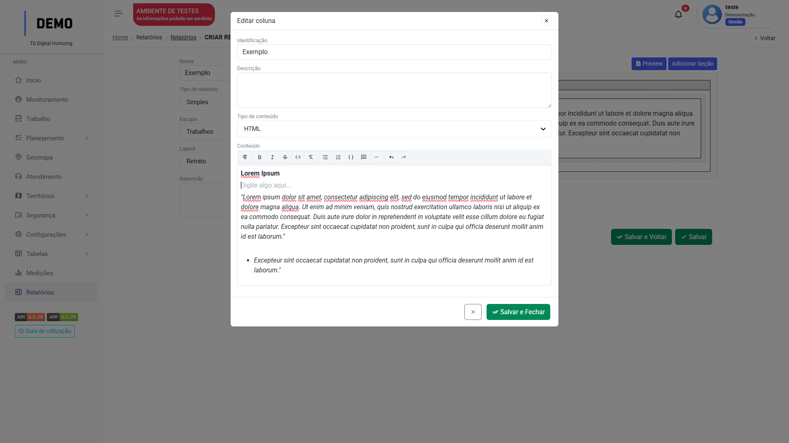
Saída no relatório:
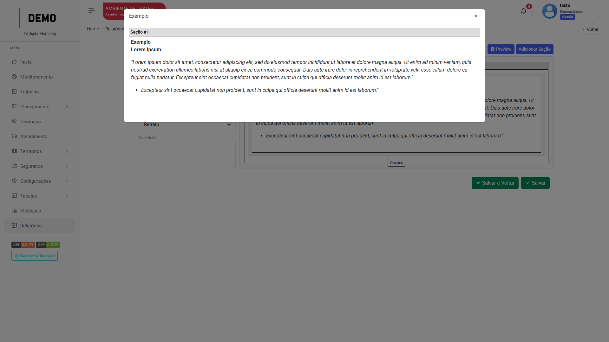
Clique em "Preview" para visualizar a saída
Dinâmico
O tipo de conteúdo "Dinâmico" irá abrir o campo de seleção "fonte", para que seja selecionada a fonte de extração de dados daquela coluna.
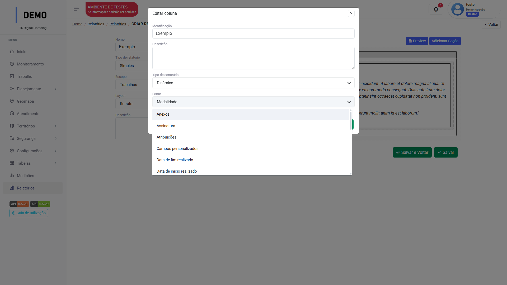
Por exemplo, ao selecionar a fonte "Atribuições", quando o usuário extrair o relatório de uma tarefa, naquela coluna todos os usuários atribuídos na tarefa serão listados:
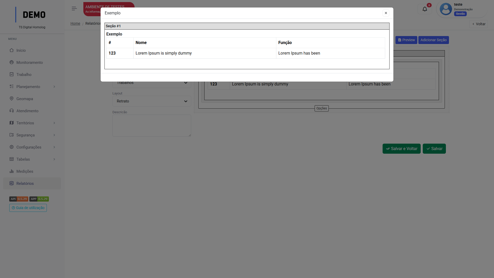
Clique em "Preview" para visualizar a saída
Extrair relatório dinâmico
Da tarefa
Após alterar o Status da tarefa para concluído, o botão de "Relatórios" será disponibilizado na tela:
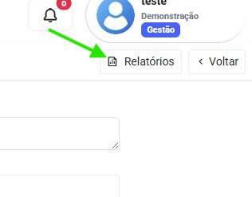
Clique e selecione o relatório desejado.
Uma Preview irá abrir com a opção de "imprimir" ou "Exportar PDF":
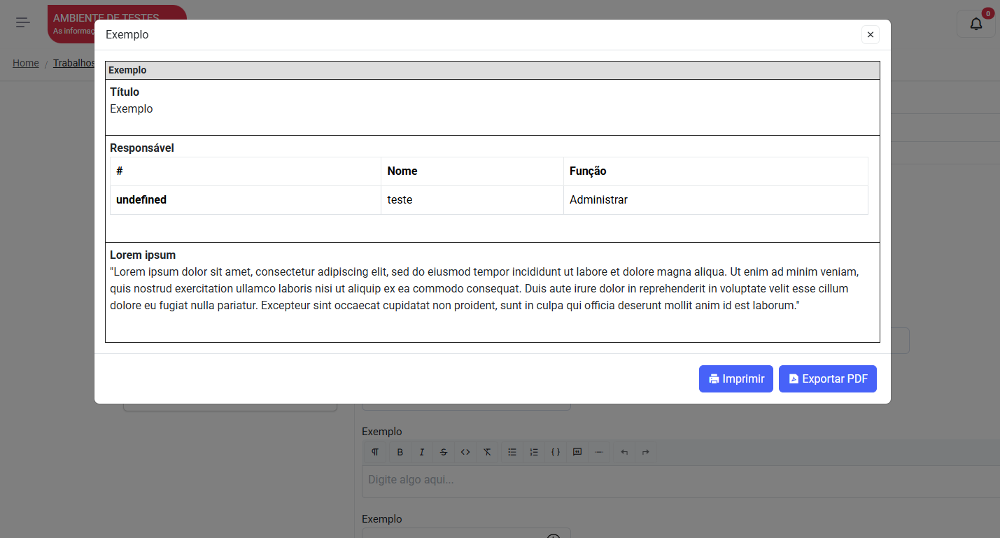
Clique na opção desejada.
Atenção
Para que um usuário possa extrair um relatório dinâmico, o relatório deve ser habilitado para extração em seu Perfil de Acesso.
Info
As opções de relatório "Contínuo" e o escopo "Planos" ainda estão em desenvolvimento